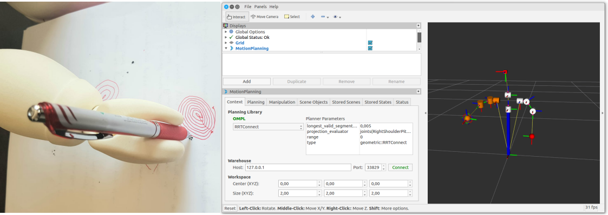

Controlling QTrobot arms using MoveIt
Get the full code in our github tutorial repository.
This advanced example demonstrates how to use ROS MoveIT to control QTrobot arms. The example draw some shapes (i,e. rectangle and spirals) on the XY plane in robot frame.

Preparation and requirements
Before running the example, please ensure that following setups of your QTrobot and the machine which you are running the example.
QTrobot setup
By default QTrobot motors interface runs in 'normal' mode. in normal mode, the motors control loop and joints state publisher run in low frequency (2-5hz). More importantly the joint position values are in degree. To be able to use MoveIt with QTrobot, you need to configure it to run in 'advanced' mode:
- joints position value is in radian
- motors main controller loop and joints state publisher runs in 30hz.
- required interfaces and controller such as robot_state_publisher and JointTrajectoryController are available
Update ros-kinetic-qt-motor package if necessary:
First check and update (if necessary) the ros-kinetic-qt-motor package on the QTrobot head machine (QTRP). ssh to the QTRP (e.g. via QTPC or your desktop) and
qtrobot@QTXXX: apt list ros-kinetic-qt-motor
ros-kinetic-qt-motor/now 1.2.0-0xenial armhf [installed,local]
ros-kinetic-qt-motor is older then 1.2.0, you NEED to update it:
make a copy of your current QTrobot configuration (qtrobot-hardware.yaml). You need this file to put it back after updating the package:
qtrobot@QTXXX: cp /opt/ros/kinetic/share/qt_motor/config/qtrobot-hardware.yaml ~/
ros-kinetic-qt-motor. in my case it is 1.2.0-0:
qtrobot@QTXXX: cd ~/robot/packages/dep
qtrobot@QTXXX: git pull
qtrobot@QTXXX: sudo apt remove ros-kinetic-qt-motor
qtrobot@QTXXX: sudo dpkg -i ros-kinetic-qt-motor_1.2.0-0xenial_armhf.deb
qtrobot-hardware.yaml):
qtrobot@QTXXX: sudo cp ~/qtrobot-hardware.yaml /opt/ros/kinetic/share/qt_motor/config/
Change motor launcher autostart script to run in advanced mode:
qtrobot@QTXXX: nano ~/robot/autostart/start_qt_motor.sh
roslaunch qt_motor qt_motor_advanced.launch
Reboot the robot to run the advance motor interface.
Check the advanced mode setup: After rebooting the reboot, you can check (from QTPC, QTRP or your machine) if the motor interface is running in the advanced mode:
joint state publisher frequency:
qtrobot@QTXXX: rostopic hz /qt_robot/joints/state
average rate: 30.041
min: 0.029s max: 0.047s std dev: 0.00391s window: 29
joints value should be in radian:
qtrobot@QTXXX: rostopic echo /qt_robot/joints/state
position: [0.015707962851830046, 0.0, -0.6073745663782212, 1.569051024174513, -0.9896016991965904, -0.5689773095185405, -0.3455751785790718, -0.8360127383368947]
trajectory controller is running:
qtrobot@QTXXX: rostopic type /qt_robot/left_arm_controller/follow_joint_trajectory/goal
control_msgs/FollowJointTrajectoryActionGoal
Your machine setup (e.g. QTPC)
After checking and updating the QTrobot setup, you can install the iKfast solver plugin for MoveIt on the machine which you plan to run the example:
clone the QTrobot open software repository:
cd ~/
git clone https://github.com/luxai-qtrobot/software.git
cd ~/catkin_ws
ln -s ~/software/qtrobot_ikfast_right_arm_plugin/ ./
ln -s ~/software/qtrobot_ikfast_right_left_plugin/ ./
cd ../
catkin_make
clone and build the motors_moveit
Assuming that you have cloned the tutorial repository somewhere on your home folder (e.g. ~/tutorials):
cd ~/catkin_ws
ln -s ~/tutorials/examples/motors_moveit ./
cd ../
catkin_make
motors_moveit to your catkin_ws.
How to run the examples
Launch moveit_qtrobot.launch to start move_group planner and rviz:
roslaunch motors_moveit moveit_qtrobot.launch
wait until rviz shows up, then run one of the following demos:
Drawing rectangle
rosrun motors_moveit draw_rectangle.py joint_states:=/qt_robot/joints/state
Drawing spiral
rosrun motors_moveit draw_spiral.py joint_states:=/qt_robot/joints/state